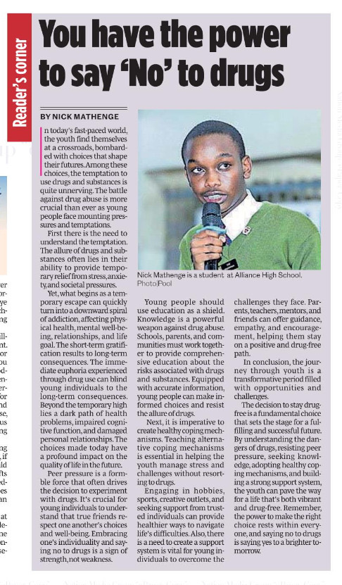
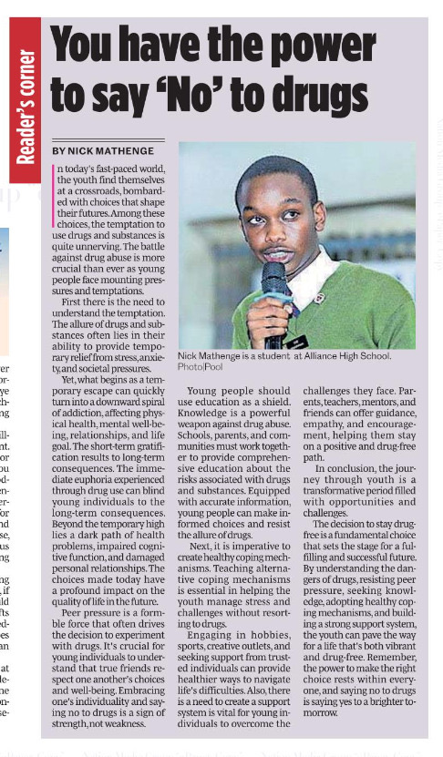

About Nick
As founder of Furaha Initiative, Assistant Director at Yale Model African Union, creator of ElimuX College Consulting, and principal at Mathenge Inc., I fuse product thinking with people-centred leadership to scale youth opportunity.
I thrive at the intersection of community organising, software delivery, and partnership design—whether I am helping classmates debug code, volunteering at church, or hosting fellow golfers for strategy huddles.
- Mobilised 500+ volunteers and partners to deploy national-impact social programmes.
- Shipped 15+ digital products while mentoring 50+ youths in engineering, AI, and design fluency.
- Represented Kenya on diplomacy stages from Harvard to Yale and brokered exchange alliances across Europe and Africa.


 
